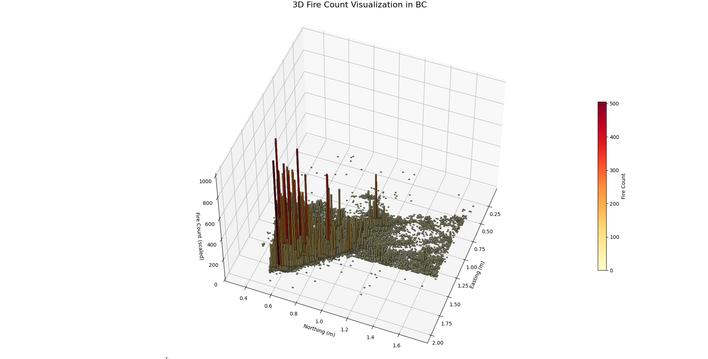

BC Wildfire Hectare Range Predictor
Predicting wildfires before they spread — this project blends machine learning with interactive satellite maps to visualize potential fire impact zones in real time.

Predicting wildfires before they spread — this project blends machine learning with interactive satellite maps to visualize potential fire impact zones in real time.